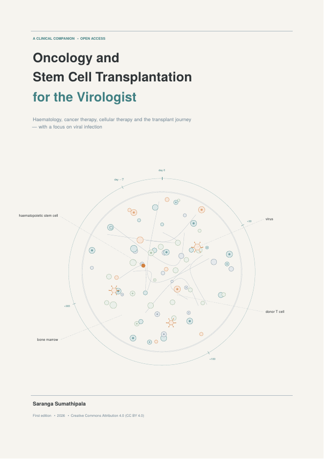

Haematology, cancer therapy, cellular therapy and the transplant journey — written as clinical notes for virologists who care for infections in cancer and transplant patients.
Download PDF Read online
Haematopoiesis and the blood count; the immune system; how cancer develops (including viral oncogenesis); diagnosis, grading and staging.
Acute leukaemias; MDS, MPN and CML; lymphomas and CLL; myeloma; non-malignant diseases treated by transplant.
What the virologist needs to know about common solid cancers.
Chemotherapy, radiotherapy, targeted drugs, antibodies, bispecifics, checkpoint inhibitors, CAR-T, supportive care and emergencies.
The net state of immunosuppression; viral infections outside transplantation; vaccination.
Indications, donors and HLA, mobilisation, conditioning, Day 0, engraftment, GVHD, immune reconstitution, CMV, EBV and other viruses, complications, relapse, late effects, revaccination, and the transplant unit day by day.
© 2026 Saranga Sumathipala. Text and diagrams are published under the Creative Commons Attribution 4.0 International License (CC BY 4.0). Third-party photographs from Wikimedia Commons keep their own licences — see image credits.
Suggested citation: Sumathipala S. Oncology and Stem Cell Transplantation for the Virologist: A Clinical Companion. 1st ed. 2026. Open access, CC BY 4.0.
Prepared with the assistance of an AI tool (Claude, Anthropic) for drafting, figures and reference checking; the author directed the work and is responsible for it. For education only — check current guidelines and local protocols before clinical use.